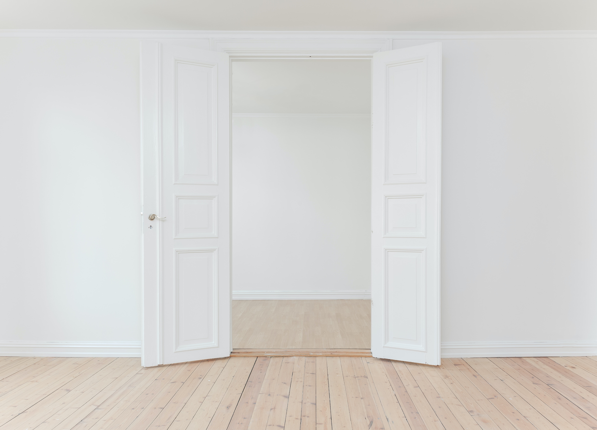

Welcome Home
안녕하세요. 여기는 빈1이의 집이에요. html로 존재하고 있는 집인데요. 아직 미완성이에요.
저는 항상 집에 있어도 집에 가고 싶었거든요. 언젠가는 제 진짜 집을 찾을 수 있을까요?

집
(표준국어대사전의 정의)
1.명사 사람이나 동물이 추위, 더위, 비바람 따위를 막고 그 속에 들어 살기 위하여 지은 건물.
2.명사 사람이나 동물이 살기 위하여 지은 건물의 수효를 세는 단위.
3.명사 가정을 이루고 생활하는 집안.